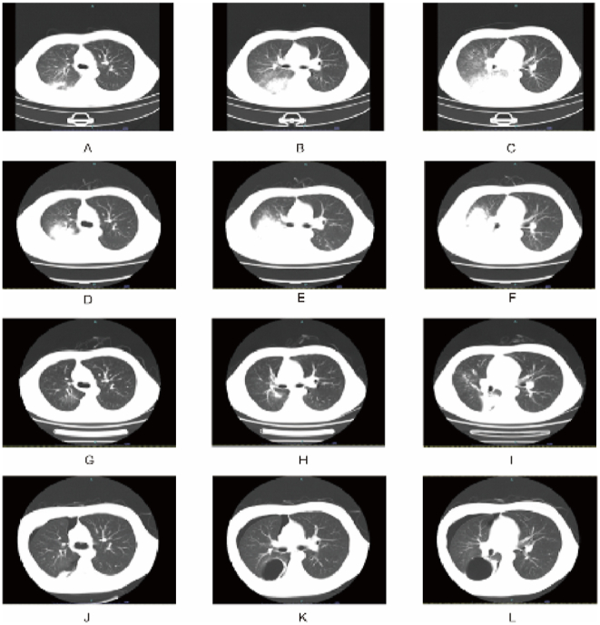
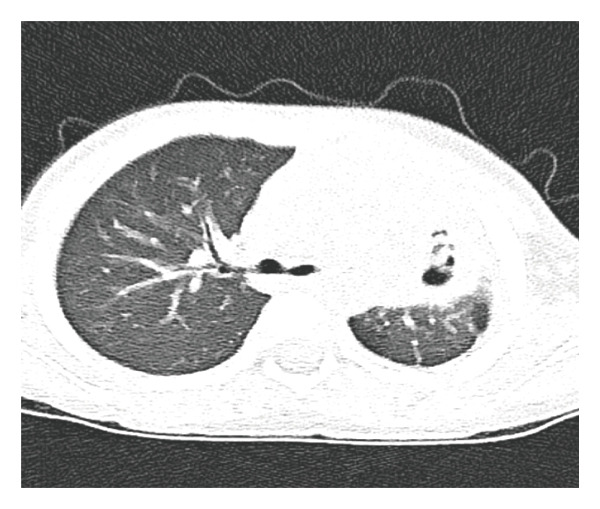
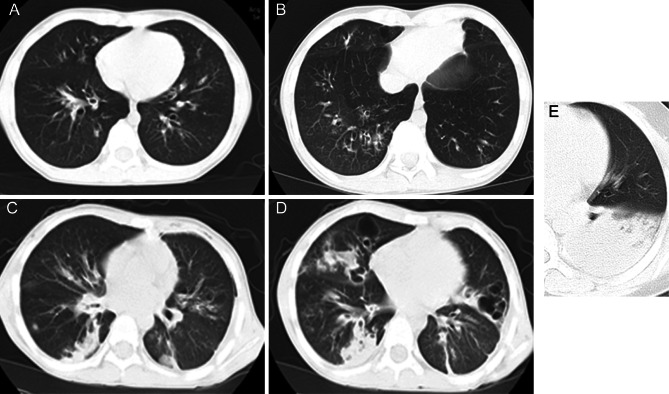

6150 — Viêm phổi do Mycoplasma pneumoniae nặng và kháng macrolide ở trẻ: mẫu hình CT, điểm CT và khi nào đổi thuốc
Tags: pattern:dong-dac pattern:kinh-mo pattern:xep-phoi pattern:hoai-tu pattern:tran-dich-mang-phoi pattern:ba-nhay-phe-quan vung:phoi vung:phe-quan vung:mang-phoi protocol:CT-nguc-lat-mong protocol:X-quang-nguc protocol:noi-soi-phe-quan score:CT-score score:SMPP
Mức chắc chắn (certainty): tổng hợp y văn (literature synthesis) — ghép 244 trẻ MPP có điểm CT + nội soi phế quản (BMC Pulm Med 2024, PMCID PMC11110382), 417 trẻ GMPP/SMPP (BMC Infect Dis 2024, PMCID PMC11046970), 236 trẻ kháng macrolide so với nhạy (Front Pediatr 2026, PMCID PMC13194381), 236 trẻ hoại tử phổi (Can Respir J 2026, PMCID PMC13438169), 4.406 trẻ trong meta-analysis bã nhầy phế quản (J Thorac Dis 2026, PMCID PMC13190047) và ca 17 tuổi diễn tiến nặng có 4 thời điểm CT (2024, PMCID PMC11566845). Không có ca do nhóm tự chụp.
Câu hỏi thực hành: nam 17 tuổi, sốt 40,2 °C và ho đờm vàng 1 tuần, đã dùng azithromycin 3 ngày không đỡ; X-quang có đám mờ đáy phổi phải. Bác sĩ hỏi: "Đây là viêm phổi do Mycoplasma thường hay đã kháng macrolide? Có cần CT? Khi nào dùng corticoid, khi nào nội soi phế quản lấy bã nhầy?" Bài chốt năm quyết định: (1) M. pneumoniae chiếm 10–40% viêm phổi cộng đồng ở trẻ, ~12% tiến triển nặng/kháng trị; (2) sốt ≥ 72 giờ dù đã macrolide đủ liều = "kháng trị" (RMPP), phải đánh giá lại bằng CT; (3) điểm CT 0–35 phối hợp nội soi dự báo RMPP với AUC 0,824; (4) tràn dịch màng phổi trên CT làm tăng nguy cơ bã nhầy phế quản (OR 2,46) và hoại tử phổi (OR 3,96); (5) kháng macrolide không đồng nghĩa kháng trị — phải phân biệt "đột biến 23S rRNA" với "đáp ứng viêm quá mức".
1. Tổng quan bệnh học – cơ chế hình ảnh: vì sao Mycoplasma gây "viêm phổi điển hình trên CT nhưng không điển hình trên X-quang"
- Sinh học của M. pneumoniae: vi khuẩn không có thành tế bào → mọi kháng sinh beta-lactam đều vô hiệu; thuốc hiệu quả là macrolide, tetracycline, fluoroquinolone. Đây là lý do vì sao "viêm phổi không đáp ứng amoxicillin" là một manh mối kinh điển.
- Cơ chế bám dính: protein bám P1 gắn vào thụ thể trên tế bào biểu mô có lông chuyển → tê liệt lông chuyển, giảm thanh thải nhầy; đồng thời tiết hydrogen peroxide và độc tố gây tổn thương biểu mô. Kết quả là viêm tiểu phế quản + ứ nhầy nhiều hơn là viêm phế nang thuần túy.
- Cơ chế miễn dịch: phản ứng tế bào T và cytokine (IL-8, IL-6, IFN-γ) gây phù thành phế quản, kính mờ quanh mạch, và đông đặc từng ổ. Đây là nền tảng của "viêm phổi do miễn dịch" — giải thích vì sao corticoid có chỗ đứng ở thể nặng.
- Vì sao có hoại tử và bã nhầy: viêm mạch máu nhỏ + huyết khối tại chỗ → thiếu máu cục bộ niêm mạc, tạo loét, hoại tử, và các "bã nhầy" (bronchial cast) đúc theo lòng phế quản. Bã nhầy gây tắc phế quản → xẹp phổi thùy, và có thể để lại giãn phế quản hoặc viêm tiểu phế quản bít tắc (bronchiolitis obliterans).
- TẠI SAO CT thấy nhiều hơn X-quang: X-quang chỉ thấy đám mờ khi tổn thương đủ lớn và bị che bởi trung thất/tim; CT lát mỏng 1 mm phát hiện kính mờ (ground-glass opacity, GGO), dày thành phế quản, nốt trung tâm tiểu thùy, bã nhầy trong lòng phế quản, tràn dịch lượng nhỏ, hoại tử/hang — những thứ quyết định "thường" hay "nặng".
- TẠI SAO kính mờ và đông đặc có thể cùng tồn tại: GGO = phế nang chứa một phần dịch/tế bào, còn đông đặc = phế nang đầy dịch viêm/tế bào; ở MPP, tổn thương lan theo tiểu thùy và phế quản nên hai mẫu hình xen kẽ, thường đối xứng hoặc đa thùy ở thể nặng.
- Dịch tễ và gánh nặng: MP gây 10–40% viêm phổi cộng đồng ở trẻ, hay gặp ≥ 5 tuổi (PMC13438169); khoảng 12% tiến triển thành SMPP hoặc RMPP; 15–30% không đáp ứng macrolide ban đầu.
- Kháng macrolide: đột biến A2063G ở domain V của 23S rRNA là phổ biến nhất (sau đó A2064G, A2063C). Tại Trung Quốc, tỷ lệ MRMP lên tới 93,02% trong tháng 5/2024 (trích trong PMC12818305) — nhưng kháng thuốc và nặng không đồng nghĩa: có ca nặng không tìm thấy đột biến vẫn đáp ứng kém vì phản ứng viêm quá mức (PMC11566845).
- Ngoài phổi: viêm cơ tim, hội chứng Stevens–Johnson, viêm não, tổn thương gan — gặp 58,1% ở RMPP so với 44,6% ở GMPP (PMC11110382).
2. Mẫu hình + chẩn đoán phân biệt theo hình thái (Gamut)
- Đông đặc thùy/phân thùy một bên (thường đáy phổi): mẫu hình hay gặp nhất; đông đặc bờ không rõ, có thể kèm dày thành phế quản và kính mờ quanh tổn thương. Trong ca 17 tuổi: đông đặc đáy phổi phải ngày 1, lan rộng + xuất hiện ổ mới hai đáy phổi ngày 9 (PMC11566845).
- Kính mờ hai bên + dày thành phế quản: gợi ý viêm phổi không điển hình/vi rút; phân biệt với PJP (người ức chế miễn dịch), xuất huyết phế nang, viêm phổi quá mẫn, phù phổi.
- Nốt trung tâm tiểu thùy/branching (tree-in-bud): tổn thương tiểu phế quản do MP hoặc lao, hít sặc, nhiễm nấm; đây là mẫu hình "viêm tiểu phế quản nhiễm trùng", không phải đông đặc thùy.
- Xẹp phổi kèm bã nhầy: một thùy xẹp, phế quản dẫn không khí bị lấp, có thể thấy bã nhầy đậm trên CT và gỡ được qua nội soi. Đây là thể "bã nhầy phế quản" (plastic bronchitis, PB) — gặp 11–43% trẻ MPP có nội soi; trong meta-analysis 1.123/4.406 = 25,5% (PMC13190047).
- Hoại tử/hang/pneumatocele: đông đặc có ổ giảm đậm độ trong, hang thành mỏng, hoặc kén khí; là dấu hiệu hoại tử phổi — thể nặng, có thể tràn khí màng phổi muộn (ca 17 tuổi bị tràn khí phải ngay ngày thứ 2 tái nhập viện).
- Tràn dịch màng phổi: thường lượng ít–trung bình, một bên; gặp 40,0% ở RMPP so với 18,7% ở GMPP (PMC11110382). Tràn dịch lượng nhiều/đục → nghĩ empyema/đồng nhiễm (bài 616).
- Chẩn đoán phân biệt theo vị trí và bệnh cảnh:
- Lao phổi: đông đặc thùy trên + hạch rốn phổi hoại tử, hang, nốt vệ tinh; trẻ có tiếp xúc nguồn lây — không được bỏ qua vì điều trị khác hoàn toàn (so sánh CT lao vs MPP: PMC13365861).
- Viêm phổi vi khuẩn điển hình: đông đặc đồng nhất, phân thùy rõ, tràn dịch sớm, đáp ứng beta-lactam; tác nhân hay gặp: phế cầu, S. aureus (hoại tử/hang, empyema), Klebsiella (đông đặc + phình rãnh liên thùy).
- Vi rút (adenovirus, RSV, cúm): kính mờ hai bên, dày thành phế quản, xẹp phổi nhỏ rải rác; adenovirus có thể hoại tử phổi giống MP.
- Dị vật đường thở: xẹp phổi một bên dai dẳng, bẫy khí, không sốt cao kéo dài; CT thấy dị vật cản quang hoặc phế quản bị tắc.
- Viêm phổi do hít sặc: tổn thương thùy dưới bên phải/thùy trên sau, có bệnh lý thần kinh–nuốt.
- Viêm phổi tăng bạch cầu ái toan/organizing pneumonia: kính mờ di chuyển, đáp ứng corticoid, không đáp ứng kháng sinh.
3. Bảng so sánh phân biệt (ma trận đối chiếu)
| Thực thể (entity) | Hình ảnh điển hình (CT) | Chốt vào (rule-in) | Chốt loại (rule-out) | Gợi ý xác nhận |
|---|---|---|---|---|
| MPP thường (GMPP) | Đông đặc từng ổ một bên, dày thành phế quản, ít tràn dịch | Đông đặc + PCR/nucleic acid MP dương + sốt giảm sau macrolide | Tổn thương lan nhanh hai bên + tràn dịch nhiều → không phải thể thường | PCR MP, X-quang/CT, theo dõi 48–72 giờ |
| RMPP (kháng trị) | Đông đặc lan rộng, tổn thương mới, tràn dịch 40%, xẹp phổi | Sốt ≥ 38,5 °C, ≥ 4 giờ/ngày sau ≥ 72 giờ macrolide TM + hình ảnh xấu đi | Sốt giảm rõ trong 72 giờ → không phải RMPP | CT ngực, LDH/CRP/D-dimer, nội soi phế quản |
| MRMP (kháng macrolide) | Không có mẫu hình riêng; đông đặc thùy 68,3%, hai bên 66,2%, tràn dịch 32,4% | Đột biến A2063G/A2064G trên 23S rRNA hoặc không đáp ứng macrolide + yếu tố dịch tễ | Không có đột biến và đáp ứng tốt → không phải MRMP | PCR đột biến 23S rRNA từ dịch hô hấp |
| Bã nhầy phế quản (PB) | Xẹp phổi + bã nhầy trong phế quản, CT thấy phế quản tắc; có thể tràn khí | Nội soi thấy bã nhầy đúc hình phế quản + xẹp phổi không cải thiện | Xẹp phổi do đờm lỏng, hết sau vỗ rung → không phải PB | Nội soi phế quản (chẩn đoán xác định) |
| Hoại tử phổi do MP | Đông đặc + ổ giảm đậm độ/hang/kén khí, tràn dịch | Hang trong vùng đông đặc + tràn dịch + CRP/WBC cao | Đông đặc đồng nhất không hang → chưa hoại tử | CT cản quang, theo dõi sát |
| Viêm phổi do phế cầu | Đông đặc phân thùy đồng nhất, có thể tràn dịch | Cấy máu/đờm phế cầu + đáp ứng beta-lactam | Đông đặc bờ mờ + dày phế quản lan tỏa → nghi MP/vi rút | Cấy máu, test nhanh, PCR đa tác nhân |
| Lao phổi | Đông đặc thùy trên + hạch hoại tử, hang, nốt vệ tinh | Xét nghiệm lao dương (Xpert MTB/RIF) + hạch hoại tử | Không hạch, đông đặc đáy phổi → nghi MP | Xpert MTB/RIF, CT ngực |
| Vi rút (adenovirus) | Kính mờ hai bên, dày phế quản, xẹp nhỏ; có thể hoại tử | PCR vi rút dương + bệnh cảnh dịch | Không có bằng chứng vi rút, đáp ứng macrolide → nghi MP | PCR hô hấp đa tác nhân |
| Dị vật đường thở | Xẹp phổi một bên dai dẳng, bẫy khí, có thể thấy dị vật | Tiền sử sặc + dị vật trên CT/nội soi | Xẹp phổi hai bên/lan tỏa → không phải dị vật | Nội soi phế quản |
4. Protocol chụp + hệ phân loại/điểm chuẩn hóa
4.1 Chỉ định hình ảnh
- X-quang ngực thẳng là bước đầu; không cần X-quang lặp lại nếu trẻ hồi phục nhanh và không có biến chứng.
- CT ngực khi: (1) nghi nặng/kháng trị (sốt kéo dài, SpO₂ thấp, suy hô hấp); (2) X-quang không giải thích được mức độ nặng; (3) nghi tràn dịch/empyema, xẹp phổi, hoại tử, hang; (4) trước nội soi phế quản để lập kế hoạch.
- Kỹ thuật: CT lát mỏng 1 mm, thì hít vào (hợp tác được), liều thấp theo cân nặng (xem ngưỡng DRL ở bài 937 và an toàn bức xạ bài 9420); trẻ nhỏ cần giảm kVp, tự động điều chỉnh dòng, hạn chế chụp lặp.
- Không dùng cản quang thường quy; chỉ tiêm khi cần đánh giá hoại tử/empyema/mạch máu.
4.2 Điểm CT (CT score) — thang 0–35
- Chia 5 thùy, mỗi thùy cho 0–5 điểm theo phần trăm thể tích bị tổn thương: 0 = không; 1 = < 5%; 2 = 5–25%; 3 = 26–49%; 4 = 50–75%; 5 = > 75%.
- Cộng thêm: +1 nếu có dấu lát đá (paving stone) trong thùy; +2 nếu có đông đặc (có/không kèm lát đá) trong thùy → tổng tối đa 35.
- Hiệu lực dự báo RMPP trong 244 trẻ: CT score đơn thuần AUC 0,786 (Se 0,81; Sp 0,64; cut-off 0,44); phối hợp điểm nội soi phế quản + CT: AUC 0,824 (Se 0,89; Sp 0,64) (PMC11110382). Điểm CT cao hơn ở nhóm MRMP (9,22 so với 7,88) trong một đoàn hệ khác (PMC13194381).
4.3 Ngưỡng lâm sàng – xét nghiệm
- SMPP (viêm phổi nặng): có ≥ 1 tiêu chuẩn — tổn thương ≥ 2/3 một phổi, đa thùy, tràn dịch, tràn khí, xẹp phổi, hoại tử/áp-xe; SpO₂ < 92%**; biến chứng ngoài phổi; **sốt cao > 5 ngày; bú kém/không ăn được (PMC11046970).
- RMPP (kháng trị): sốt ≥ 38,5 °C kéo dài ≥ 4 giờ/ngày sau ≥ 72 giờ macrolide tĩnh mạch đủ liều, kèm hình ảnh xấu đi hoặc biến chứng ngoài phổi (PMC13438169).
- Xét nghiệm hỗ trợ: LDH (OR 4,06 cho bã nhầy), D-dimer (OR 2,63), CRP (OR 2,15 cho hoại tử), WBC (OR 2,48 cho hoại tử); LDH và ferritin tương quan với liều corticoid (ρ 0,672 và 0,654) (PMC13190047, PMC13438169, PMC11225272).
- Điểm nguy cơ hoại tử phổi: tràn dịch (OR 3,96), WBC cao (OR 2,48), sốt kéo dài (OR 1,62), CRP cao (OR 2,15); mô hình có AUC 0,848 (tập dẫn) và 0,889 (tập kiểm định) (PMC13438169).
4.4 Điều trị theo bậc
- Bậc 1 — macrolide: azithromycin là lựa chọn đầu tay; hiệu quả rõ trong 48–72 giờ ở thể thường. Không dùng macrolide đơn thuần kéo dài khi đã ghi nhận thất bại.
- Bậc 2 — khi nghi/khẳng định kháng macrolide hoặc không dung nạp: tetracycline (doxycycline/minocycline) ở trẻ ≥ 8 tuổi; tigecycline trong ca nặng (ca 17 tuổi dùng 50 mg TM mỗi 12 giờ); fluoroquinolone chỉ khi cân nhắc lợi ích–nguy cơ (PMC11566845).
- Bậc 3 — corticoid: dùng khi RMPP nặng, phản ứng viêm quá mức; liều chia theo ≤ 2 / 2–10 / ≥ 10 mg/kg/ngày methylprednisolone, không có bằng chứng RCT rằng liều cao luôn tốt hơn; theo dõi LDH/ferritin để chỉnh liều (PMC11225272).
- Bậc 4 — nội soi phế quản: chỉ định khi xẹp phổi do bã nhầy không cải thiện sau 48–72 giờ hoặc suy hô hấp nặng; gỡ bã nhầy có thể cải thiện thông khí ngay. Bã nhầy phế quản gặp 11–43% trẻ MPP có nội soi.
- Theo dõi sau xuất viện: dặn tràn khí màng phổi muộn (ca 17 tuổi bị ngày 2 tái nhập viện), ho ra máu, khó thở tăng; hẹn tái khám và X-quang nếu có triệu chứng.
4.5 Thuật toán một lượt
flowchart TD
A[Trẻ sốt + ho, X-quang có đám mờ] --> B[PCR/nucleic acid MP + công thức máu, CRP, LDH]
B --> C{Đáp ứng lâm sàng sau 48-72 giờ macrolide?}
C -->|Có| D[Tiếp tục macrolide, theo dõi ngoại trú]
C -->|Không| E[CT ngực lát mỏng + đánh giá điểm CT]
E --> F{Có tràn dịch, xẹp phổi, hoại tử hoặc tổn thương lan rộng?}
F -->|Không| G[Xem lại chẩn đoán: lao, vi rút, dị vật, hít sặc]
F -->|Có| H{Sốt ≥ 38,5 độ C ≥ 4 giờ/ngày sau 72 giờ macrolide?}
H -->|Có| I[RMPP: đổi kháng sinh theo tuổi + corticoid + cân nhắc nội soi phế quản]
H -->|Không| J[Điều trị theo mẫu hình: empyema, xẹp phổi, hoại tử]
I --> K{Cải thiện sau 48-72 giờ?}
K -->|Không| L[Nội soi phế quản gỡ bã nhầy + xem lại kháng sinh]
K -->|Có| M[Theo dõi di chứng: giãn phế quản, BO, tràn khí muộn]
5. Biến thể bình thường và cạm bẫy
- "Sốt kéo dài" không đồng nghĩa "kháng thuốc": có thể do phản ứng viêm quá mức, bã nhầy gây tắc, hoặc empyema — phải chụp CT và xem lại ổ nhiễm trước khi đổi kháng sinh mù.
- Kháng macrolide ≠ kháng trị: ca 17 tuổi không tìm thấy đột biến 23S rRNA nhưng vẫn không đáp ứng macrolide và cải thiện khi đổi kháng sinh + corticoid + gỡ bã nhầy (PMC11566845). Ngược lại, có đột biến vẫn có thể đáp ứng nếu phản ứng viêm được kiểm soát.
- Xẹp phổi do bã nhầy bị đọc là "viêm phổi nặng thêm": nếu thùy xẹp không cải thiện sau 48–72 giờ và phế quản dẫn bị tắc, cần nội soi chứ không chỉ tăng kháng sinh.
- Tràn dịch màng phổi nhỏ là bình thường ở MPP: chỉ tràn dịch nhiều, vách hóa, đục mới gợi ý empyema/đồng nhiễm; đừng đặt dẫn lưu chỉ vì "có dịch".
- Hình ảnh hồi phục chậm hơn lâm sàng: trong ca 17 tuổi, CT ngày 17 đã cải thiện rõ dù bệnh nhân còn mệt; không chụp lại quá sớm chỉ vì "còn đám mờ".
- Tràn khí màng phổi muộn: có thể xuất hiện sau xuất viện (ngày thứ 2 tái nhập ở ca trên) do kén khí/vỡ ổ hoại tử; phải dặn bệnh nhân và gia đình.
- Corticoid không thay thế kháng sinh: dùng corticoid khi chưa loại trừ lao có thể làm nặng bệnh; luôn Xpert MTB/RIF ở vùng lưu hành và khi có hạch/hang.
- Điểm CT phụ thuộc kỹ thuật: trẻ hít vào kém, nhiễu chuyển động, lát cắt dày làm điểm cao/thấp giả; phải chuẩn hóa cùng thì, cùng độ dày khi so sánh hai lần chụp.
- Tổn thương "di chuyển" hoặc tái phát cùng vị trí: nghĩ dị vật, hít sặc, hoặc organizing pneumonia — không phải MPP tái phát.
6. Tự lượng giá — Blind Quiz
Ca 1 — Nam 17 tuổi, sốt 40,2 °C, ho đờm vàng, azithromycin 3 ngày không đỡ.

- Gợi ý lâm sàng: SpO₂ giảm, chỉ số oxy hóa 86,3; nội soi thấy bã nhầy bít phế quản.
- Câu hỏi: Mô tả diễn tiến A–C → D–F → G–I → J–L. Vì sao bệnh nhân vẫn sốt dù đã macrolide? Bước tiếp theo?
Bấm để hiện đáp án (findings + chẩn đoán)
- Dấu hiệu: A–C đông đặc đáy phổi phải; D–F đông đặc lan rộng + ổ mới hai đáy phổi; G–I cải thiện rõ; J–L tràn khí màng phổi phải + kén khí trong phổi ngày 2 tái nhập viện.
- Chẩn đoán: RMPP/MUMPP (không đáp ứng macrolide) có bã nhầy phế quản và biến chứng tràn khí muộn.
- Vì sao: sốt ≥ 72 giờ dù macrolide + hình ảnh xấu đi = RMPP; xử trí gồm đổi kháng sinh (tigecycline 50 mg mỗi 12 giờ), methylprednisolone 40 mg/ngày từ ngày 6, nội soi gỡ bã nhầy; theo dõi tràn khí muộn sau xuất viện.
- Nguồn ảnh: 2024, PMCID PMC11566845, CC BY 4.0.
Ca 2 — Trẻ 6 tuổi, sốt 8 ngày, đông đặc thùy trái, không đáp ứng macrolide.

- Gợi ý lâm sàng: CRP 120 mg/L, WBC 18 × 10⁹/L, tràn dịch màng phổi lượng vừa.
- Câu hỏi: Dấu hiệu nào trên CT chỉ hoại tử? Yếu tố nào dự báo hoại tử, và cần theo dõi gì?
Bấm để hiện đáp án (findings + chẩn đoán)
- Dấu hiệu: đông đặc + ổ giảm đậm độ trong + hang thành mỏng, kèm tràn dịch.
- Chẩn đoán: viêm phổi hoại tử do MP.
- Vì sao: tràn dịch (OR 3,96), WBC cao (OR 2,48), sốt kéo dài (OR 1,62), CRP cao (OR 2,15) là yếu tố dự báo; mô hình AUC 0,848/0,889; cần theo dõi tràn khí, rò phế quản–màng phổi, empyema và cân nhắc ngoại khoa nếu có biến chứng.
- Nguồn ảnh: Can Respir J 2026, PMCID PMC13438169, CC BY 4.0.
Ca 3 — Trẻ 5 tuổi, ho 5 ngày, X-quang mờ hai đáy phổi; CT lát mỏng được chấm điểm.

- Gợi ý lâm sàng: sốt 39 °C ngày thứ 6, SpO₂ 93%, LDH 480 U/L, D-dimer 2,1 mg/L.
- Câu hỏi: Cách cho điểm từng thùy? Tổng điểm và phối hợp nội soi giúp dự báo gì?
Bấm để hiện đáp án (findings + chẩn đoán)
- Dấu hiệu: mỗi thùy 0–5 điểm theo % thể tích (0; < 5%; 5–25%; 26–49%; 50–75%; > 75%), +1 nếu lát đá, +2 nếu đông đặc; tổng 0–35.
- Chẩn đoán: RMPP nếu sốt ≥ 38,5 °C ≥ 4 giờ/ngày sau 72 giờ macrolide; điểm CT cao + nội soi có bã nhầy → nguy cơ cao.
- Vì sao: CT score đơn thuần AUC 0,786, phối hợp điểm nội soi + CT AUC 0,824 (Se 0,89; Sp 0,64); LDH 480 U/L và D-dimer 2,1 mg/L làm tăng xác suất bã nhầy (OR 4,06 và 2,63).
- Nguồn ảnh: BMC Pulm Med 2024, PMCID PMC11110382, CC BY 4.0.
Bài liên quan chéo
- 600 – Tổng quan Nhi khoa
- 613 – Viêm tiểu phế quản nhi
- 615 – Viêm phổi nhi: round pneumonia
- 616 – Biến chứng viêm phổi nhi: empyema & hoại tử
- 619 – Di chứng hô hấp sau hoại tử phổi/cắt thùy
- 6126 – Bã nhầy phế quản (plastic bronchitis) ở trẻ
- 614 – Bệnh tiểu phế quản tắc nghẽn & Swyer–James
Không dùng để chẩn đoán độc lập khi chưa có người hướng dẫn.